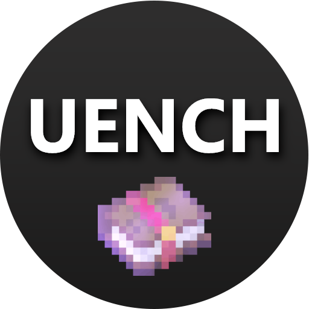

Default Pack

This is the default enchantments pack! Contains 63 enchantments ready to be used out of the box.
How to install
This pack is a built-in! Just execute the following command, and it will swiftly download and initialize all the enchantments in the pack:
/ue download default trueIf you just want to download the pack, but not install it just yet, execute the following command:
/ue download default falsePermission required:
underscoreenchants.download or underscoreenchants.*
Enchantments list
Here you can see all the enchantments of this pack in detail! You can also find them here , and the YAML files are right here.
| Enchantment name | Chance | Trigger | Cooldown | Description | |
|---|---|---|---|---|---|
| Adjusting | Level 1: 2% | PLAYERHITPLAYER | None | With a 2% chance, the damager's hand item gets repaired | |
| Adrenaline | All levels (1-5): 100% | PLAYERHITPLAYER | None | Recalculates the damage, formula: dmg = dmg - (hp - maxhp) * lvl * 0.125 | |
| Beheading | All levels (1): 100% | PLAYERHITPLAYER | None | When killing a player, the victim's head is given to the killer | |
| Better Riptide | All levels (1): 100% | PLAYERTOGGLESNEAK | 30s | During rain, sneak to dash. | |
| Block | Level 1: 3% Level 2: 5% Level 3: 7% Level 4: 9% Level 5: 11% Level 6: 13% Level 7-10: 15% |
PLAYERHITPLAYER | None | Upon being hit, there's a chance to neglect the damage and yeet the damager. | |
| Bloodthirsty | Level 1: 3 Level 2-3: 5% |
PLAYERHITPLAYER | None | Upon hitting a player, there's a small chance to get Strength. | |
| Businessman | All levels (1-5): 25% | PLAYERHITPLAYER | None | Upon hitting a player, there's a chance to earn N money, where N is the enchantment level. | |
| Consistency | All levels (1-3): 100% | PLAYERHITPLAYER | None | Upon dealing under N damage, you deal N true damage instead, where N is the enchantment level. | |
| Desperate | All levels (1): 100% | PLAYERHITPLAYER | None | Upon dying, yeet and damage the damager for them to meet the same fate. | |
| Dislocate | Level 1: 10% Level 2: 12% Level 3: 15% |
PLAYERHITPLAYER | None | Upon hitting a player, there's a small chance to randomly change their camera angle. | |
| Disspeller | Level 1: 10% Level 2: 11% Level 3: 12% |
PLAYERHITPLAYER | None | Upon hitting a player, there's a small chance to remove all their positive effects. | |
| Doctor | All levels (1): 10% | PLAYERBREAKBLOCK | None | Upon mining a block, there's a chance to fully regenerate all health. | |
| Drill | All levels (1): 0.1% | PLAYERBREAKBLOCK | None | Upon mining a block, there's a very small chance to create a giant hole. | |
| Entrepreneur | All levels (1-4): 100% | PLAYERBREAKBLOCK | None | Upon mining a block, there's a small chance to get N money, where N is the enchantment level. | |
| Evoker | All levels (1): 50% | PLAYERBOWHIT | None | Upon shooting a player, there's a chance to spawn evoker fangs on them - scary! | |
| Explosive | All levels (1): 7% | PLAYERBOWHIT | None | Upon shooting a player, there's a tiny chance to fake an explosion of the victim. | |
| Extrapolation | Level 1: 10% Level 2-3: 15% |
PLAYERHITPLAYER | None | Upon hitting a player, there's a chance to swiftly damage the victim three more times lightly. | |
| Firefly | All levels (1-3): 100% | PLAYERHITPLAYER | None | Upon hitting a player that's on fire, deal a bit more damage to them. | |
| Ghast | All levels (1): 100% | PLAYERSHOOTBOW | None | Upon shooting the bow, shoot a fireball along with the arrow! | |
| Godmode | All levels (1): 5% | PLAYERHITPLAYER | None | Upon hitting a player, there's a tiny chance to become invulnerable for a certain period of time (random: 1-3 seconds). | |
| Goldenfish | Level 1: 8% Level 2-3: 10% |
PLAYERBOWHIT | None | Upon shooting a player, there's a chance to spawn a VERY strong silverfish on them. | |
| Grinder | Level 1: 5% Level 2-3: 8% |
PLAYERHITPLAYER | None | Upon hitting a player, there's a chance to increase your XP and decrease theirs. | |
| Guardian Angel | All levels (1): 100% | PLAYERHITPLAYER | 10m | When about to die, get teleported to your bed location, clear your debuffs and regenerate in peace. | |
| Gun | All levels (1): 100% | PLAYERINTERACT | 10s | Click this hoe and shoot an arrow. | |
| Hocus Pocus | Level 1-8: level% Level 9: 3% Level 10: 1% |
PLAYERHITPLAYER | None | Upon hitting a player, shuffle their hotbar... or their entire inventory! | |
| Last Chance | All levels (1): 40% | PLAYERHITPLAYER | None | Upon almost receiving lethal damage, you might get one more chance to escape by getting Speed and negating the received damage. | |
| Lifesteal | Level 1: 15% Level 2: 20% |
PLAYERHITPLAYER | None | Upon hitting a player, you might steal some of their health. | |
| Lightning | Level 1: 17% Level 2: 20% Level 3: 22% |
PLAYERBOWHIT | None | Upon shooting a player, a lightning might strike the poor dude. | |
| Lottery | All levels (1): 1% | PLAYERHITPLAYER | None | Upon hitting a player, there's a tiny chance to kill them but set yourself on 3 hearts (6 HP). | |
| Lucky | Level 1: 5% Level 2: 7% Level 3: 5% |
PLAYERBREAKBLOCK | None | Upon mining coal ore, you might strike gold! Literally. | |
| Martyrdom | All levels (1): 100% | PLAYERHITPLAYER | None | Upon dying, spawn a TNT on your grave. | |
| Ninja | All levels (1): 100% | PLAYERHITPLAYER | None | Upon killing a player, get Speed and Jump Boost. | |
| Norepinephrine | All levels (1-5): 100% | PLAYERBOWHIT | None | Adrenaline for bows. | |
| Obsidianium | All levels (1): 100% | PLAYERMOVE | None | When moving on obsidian, get Speed and Strength for a moment. | |
| Parasite | All levels (1-3): 100% | PLAYERHITPLAYER | None | Upon hitting a player for 9+ HP, get satiated and obtain Strength. | |
| Parkour | All levels (1-2): 15% | PLAYERGOTHURT | Level 1: 5s Level 2: 7s |
There's a small chance to not receive fall damage. | |
| Penetrator | Level 1-3: 20% Level 4-5: 15% Level 6: 17% Level 9-10: 15% |
PLAYERHITPLAYER | None | Penetrate your opponent's armor. | |
| Pesceterian | All levels (1-3): 100% | PLAYEREAT | None | When eating fish, get Saturation and restore some health. | |
| Phoenix | All levels (1): 100% | PLAYERBREAKITEM | None | Upon breaking your tool, get a new one. A fresh new one. | |
| Pickpocket | Level 1: 2% Level 2: 4% Level 3: 6% Level 4: 7% Level 5: 8% |
PLAYERHITPLAYER | None | Upon hitting a player, there's a small chance to make their jaw (and hand) drop. | |
| Poison | All levels (1): 15% | PLAYERBOWHIT | None | Upon shooting a player, there's a small chance to poison them. | |
| Reciprocation | Level 1: 25% Level 2-3: 30% |
PLAYERHITPLAYER | None | Upon hitting a player, there's a chance to make them slower. | |
| Reduce | Level 1: 20% Level 2: 25% |
PLAYERHITPLAYER | None | Upon being hit, there's a chance to reduce that damage to only 30%. | |
| Rekt | Level 1: 5% Level 2: 8% |
PLAYERHITPLAYER | None | Upon being hit, there's a chance to teleport the damager to a random place - potentionally to a suffocating one. | |
| Robber | Level 1: 2% Level 2: 4 Level 3: 6% Level 4: 8% Level 5: 10% |
PLAYERHITPLAYER | None | Upon hitting a player, there's a chance to steal the victim's hand! | |
| Saunabuffs | All levels (1): 100% | PLAYERGOTHURT | None | Damage in the Nether is decreased a lot. | |
| Seep | All levels (1): 100% | PLAYERBOWHIT | None | Upon shooting a player who's blocking, deal 5 true damage to them. | |
| Severe | All levels (1): 1% | PLAYERBOWHIT | None | Upon shooting a player, there's a tiny chance to deal 11 true damage to them. | |
| Shield | All levels (1-2): 100% | PLAYERHITPLAYER | None | Upon being hit when under 4 HP, get Speed and Absorption. | |
| Stealthy | All levels (1-3): 100% | PLAYERHITPLAYER | None | Upon hitting a player while sneaking, increase the dealt damage. | |
| Stunning | All levels (1): 10% | PLAYERHITPLAYER | None | Upon hitting a player, there's a chance to stun them - make 'em blind, slow and tired. | |
| Suffocation | All levels (1): 100% | PLAYERHITPLAYER | None | Upon hitting a player, there's a chance to spawn a bunch of sand on top of them. | |
| Swimmer | All levels (1): 100% | PLAYERBREAKBLOCK | None | Upon breaking a block while swimming (not just being underwater), get Regeneration. | |
| Thorncover | All levels (1): 100% | PLAYERGOTHURT | None | Upon being damaged by thorns, just don't. | |
| Thunder | Level 1: 10% Level 2: 15% |
PLAYERHITPLAYER | None | Upon hitting a player, strike a lightning on them. | |
| Toolsmith | All levels (1): 1% | PLAYERBREAKBLOCK | 60s | Upon breaking a block while sprinting, there's a chance to repair your hand. | |
| Track | All levels (1): 100% | PLAYERBOWHIT | None | Upon shooting a player, get their coordinates in your actionbar for some time. | |
| Trail | All levels (1-3): 100% | PLAYERMOVE | None | Get a fancy trail behind your feet. | |
| Tuna | All levels (1): 2% | PLAYERBREAKBLOCK | None | Upon mining a block, there's a chance to get some cod. Please cook it. | |
| Uno Reverse | All levels (1): 30% | PLAYERBOWHIT | None | Upon being shot, you might as well damage the damager by 4 HP. | |
| Vampire | All levels (1): 100% | PLAYERHITPLAYER | None | Upon killing a player, get Regeneration. | |
| Vegan | All levels (1-3): 100% | PLAYEREAT | None | Pesceterian for vegans. | |
| Wither | Level 1: 15% Level 2-3: 20% |
PLAYERHITPLAYER | None | Upon hitting a player, there's a chance to wither them. |